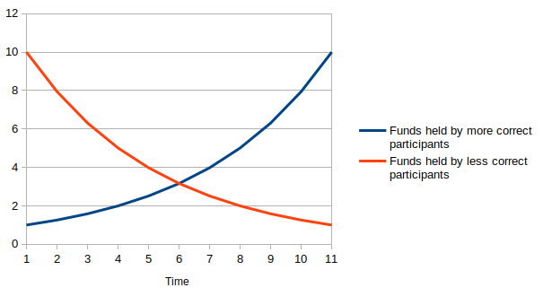

A Tool To Create Decentralised Media Companies
Published on 2022-09-20
We allow any group of people to create a shared Twitter account. A shared Twitter account has the same advantages as a media company: multiple people can produce better content than a single person — that’s why newspapers have multiple journalists. It also has many of the needs of a media company: it needs a way to incentivise content producers and a way to select the best content to be published. We solve these two needs in a new and better way.
In this post, I will describe in detail the problems that our product, Writing Monks (WM), solves. What are the current solutions and why our solution is better.
Problem: Content Curation is Hard
Finding out which content is good and which isn’t is really hard. This is especially true for long-form written content. Harry Potter was famously rejected by 12 different publishers before being accepted by Bloomsbury. In the typical publishing process, the book author first sends literary agents a synopsis (~2 pages long). If the agents like the synopsis, they will request a partial (~ 30 pages long) and then the full text. This long, costly process does not scale to our current online platforms for written content (twitter, reddit, medium, newsletters, etc.).
Current online platforms decide what content to show each user based on 1) the content’s likes/upvotes/downvotes and 2) who the user follows. In sum, the number of eyeballs a piece of content gets depends partly on its quality and partly on the author’s following.
As an online writer, the best thing you can do to increase your reach is to build up a following. This requires you to post often. However, this method is unlikely to create the next Harry Potter, the best blog post on shrimp farming or the best take on some current geopolitical event. The best-written content is often written by people who are collecting thoughts for multiple years and then distilling their insights into a post every once in a while.
In platforms like Hacker News, users don’t follow specific writers, and so the goal is to purely highlight the best content regardless of who the writer is. They do this by using upvotes/downvotes. This system is a huge success, but it has flaws. The risk/reward of reading a brand new post (without any upvotes/downvotes) is high, and users will make better use of their time reading only the top submissions. This makes the first upvotes incredibly important and, therefore, easy to manipulate the top page with a group of friends upvoting early on.
Solution: Prediction Markets
We first need to define what “good” twitter content is. We could naively say that the post that gets the most likes is the best. However, we would find that for an audience large and diverse enough, the best performing content is always cats and dogs doing cute, silly things.
What we want is to post the best-performing content for a certain niche or a particular topic. On Writing Monks, each shared Twitter account (aka publication) has guidelines that specify which topics can be published and which type of content is forbidden. The team that owns the publication selects a group of moderators to enforce these guidelines. So far, this is similar to what happens on Reddit or Hacker News (HN). However, in contrast to Reddit and HN, our method can scale the moderators’ actions and incentivise users to find the best content early on.
Whenever a team member suggests a piece of content to be published, WM creates a prediction market. The prediction market predicts “how many likes this post will have 24h after being published on the shared twitter account”. Markets are our best tool to predict the future. If you want to know the future cashflow of companies, check the stock market. If you want to know who will be the winner in an upcoming boxing match, check a sports betting market. If you want to see the content that does well on twitter, check the accounts managed by Writing Monks.
Any team member can bet on the market. If a bet is large enough, it will change the market’s prediction. A bettor can maximise his profit by moving the market from an inaccurate estimate to an accurate one. Once the market estimate is correct, no one can make it “more correct”, so no one will be able to profit anymore. This is how we incentivise users to find good content as early as possible.
The prediction markets also make moderation scalable. The moderators no longer have to look at every post. They can simply look at the posts estimated to get the most likes. Each post has three days to be published. If they are not published, every bettor gets their money/tokens back. Bettors are incentivised not to bet on posts that go against the publications’ guidelines, because moderators will flag these posts, and bettors will get their money locked up for three days.
Vitalik Buterin proposed a similar idea that uses prediction markets for content curation in this post from 2018.
Why are markets so good at predicting the future?
It’s mainly due to three things:
- Resistance against manipulation If some whale tries to manipulate the market by making a large bet that a specific post will have many likes, it creates an opportunity for others to make a profit by making the counter bet and correcting the market. In the long run, manipulation attempts increase the market accuracy because it makes the job of experts more profitable, and therefore, it incentivises more experts to join.
-
Efficient information aggregation from the community
Over time, people who can accurately predict the performance of each content get more tokens. While people who are bad predictors get fewer tokens.

Therefore, our mechanism for selecting content gives progressively more say to people who know what good content looks like. The mechanism aggregates information from the collective according to their expertise. - Incentives, incentives, incentives Finding good written content is hard work. Hard work requires good incentives.
Incentive Design
Each shared twitter account has a token linked to it. Every time a post is published, some tokens are issued and go to:
- The writer of the post.
- To pay the prediction market’s initial subsidy.
- To pay the moderation team.
- The protocol fee.
Twenty-four hours after the post’s publication, we use a trusted third party (aka an oracle) to check how many likes the post got and settle the prediction market. In this way, we reward the team members according to their ability to write good content, find good content early, and moderate (enforce the guidelines).
Where does the token value come from? There are multiple ways to make the publication’s token valuable. Here are a few:
- Selling ad space on the twitter account. Every week, the team might auction a sponsored tweet. Sponsors use the publication’s token to send bids. The winning bid gets burnt (decreasing supply and increasing the value of the remaining tokens), and the winner gets her tweet published on the shared twitter account.
- Selling the twitter account. The token may represent fractional ownership of the twitter account. If a media company would like to buy the twitter account, it will have to make an offer that more than 50% of the token holders agree with.
- Using an already valuable token. It’s also possible to link the twitter publication with an already valuable token. This could be the good old American dollar or the token of an online community that already has a valuable token (e.g. the bored apes community has the $APE token, which is already valuable because some products can only be purchased with $APE).
Why use Web3 at all?
The blockchain makes everything transparent:
- the moderation is transparent: who flagged which post and why.
- the contributions are transparent: who contributed what and how were they rewarded.
- the profit of the twitter account is transparent: how much did the sponsor pay for the ad.
All of these are incredibly important to build trust amongst the team members. I am particularly happy about having the profit a user has received by writing content or predicting content’s performance stored on the blockchain. This profit can be used as a reputation score to select the next moderator, to give especially access or simply as a CV that proves the user’s skills in improving a social media account.
Another advantage of using blockchain is (and this one will have some jargon) that we can plug our protocol into a DAO’s (aka an organisation governed by smart contracts) governance mechanisms and their tokens.
What’s the future of Writing Monks?
We’re now managing a test account and our contracts are on a test blockchain. Our short-term goal is to start or partner with an existing online community and start managing a real twitter account.
The medium-term goal is to scale our onboarding process so that it becomes dead easy for any group of people to set up their shared twitter account with us. We also want to implement tools that make it easy for teams to monetise their twitter account.
Our long-term goal is to expand from twitter to blog posts, newsletters and books.
Join the Monks!
If your organisation wants to have a shared twitter account please send me a DM on twitter.
We are probably starting a few shared twitter accounts from scratch. By joining our monks’ community early on, you will have a say on the branding and guidelines of our first twitter accounts. Join the discussion on our brand new discord. Test the website here: writingmonks.com.